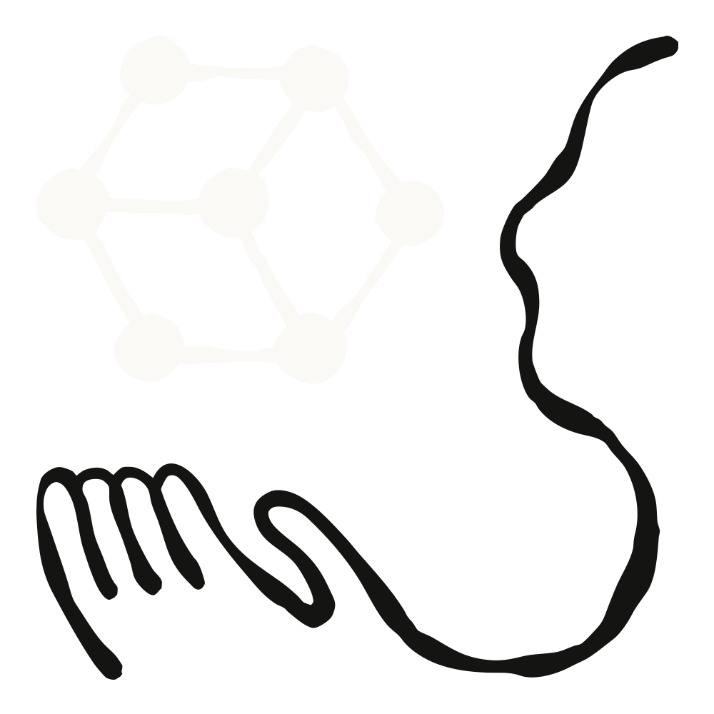
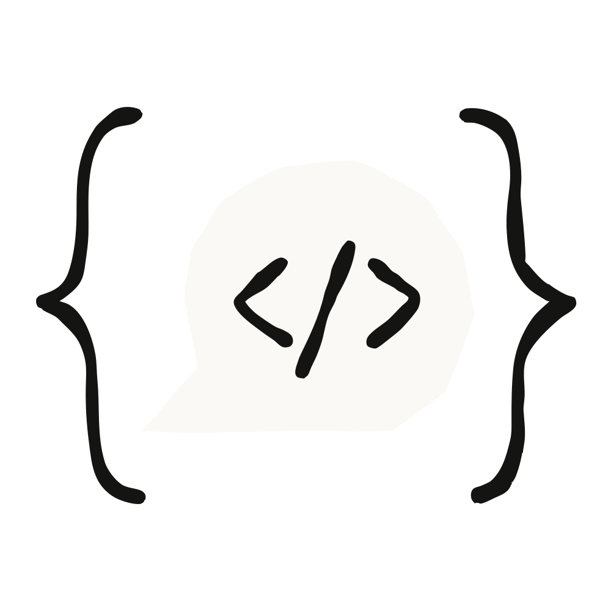

AI Products
& Research
Explore cutting-edge AI products and deep research across intelligent agents, mathematical reasoning, and data management.
Browse products →Tracking the frontier. Understanding the craft. Building by hand.
These products are inspired by the technical roadmaps and product philosophies of leading AI labs — Anthropic, OpenAI, Google DeepMind. From Constitutional AI to Codex CLI, from Deep Research to Computer Use — each project is an independent implementation born from deep understanding of these cutting-edge approaches.
The agent infrastructure draws from MCP protocol and layered context architecture. The deep research tool is built on multi-source aggregation and multimodal analysis. Desktop automation recreates the screenshot → AI analysis → execution loop. The local inference toolkit responds to the open-source community's demand for privacy-first AI.
The research reports systematically analyze the global AI competitive landscape — technology evolution, business strategy, safety governance, and societal impact — providing a comprehensive framework for understanding this rapidly changing field.

Disclaimer: Content on this site is based on research and exploration as of 2026-06-07. Information may be outdated or inaccurate. Please do not take it at face value. The author assumes no responsibility for the accuracy or completeness of the content.
Latest releases
AI Agent
ALL-AGENT v5.0 Omni3
AI Agent infrastructure platform with 3-axis 18 configurations, 18 MCP Servers, and 595 tests all passing
View detailsDeepSeek Codex TUI
Terminal AI coding assistant, Python Textual + Rich TUI, 6 tools, 4x2 orthogonal mode system
View detailsAstrognosy v2
Multi-model deep research tool with multi-source aggregation search, Playwright screenshots, and multimodal analysis
View detailsPhos v1.0
Local small model toolkit with llama-cpp-python + Streamlit GUI, fully offline operation
View detailsArgus v1.0
AI desktop automation agent with screenshot -> AI analysis -> PyAutoGUI execution, 15 actions, three-tier security
View detailsAI Math
Research
Deep research reports
on AI industry
Four comprehensive reports covering Google DeepMind, Anthropic, OpenAI, and the Chinese AI frontier — analyzing technology, strategy, and societal impact.

Google DeepMind Comprehensive Deep Research Report
From AlphaGo to Gemini: DeepMind's core technologies, papers, policies, and business strategy
Anthropic Comprehensive Deep Research Report
Claude series evolution, Constitutional AI, MCP protocol, funding, and policy controversies
OpenAI Comprehensive Deep Research Report
GPT series, reasoning models, ChatGPT, Stargate project, and military AI controversies
DeepSeek, Qwen, Kimi Frontier Research Report
Three leading Chinese AI models: MoE architecture, GRPO algorithm, hybrid reasoning, and training efficiency innovations